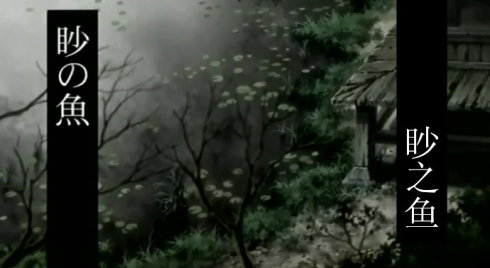
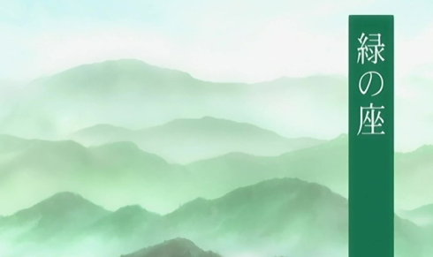

虫师
日本的漫画可说是包罗万象了。然而在我看过的所有作品中，《虫师》却是绝无仅有的一种类型。整部动画就和它那银发碧眼的主角银古一样安静，但确实是坛好酒，余味无穷。
不同于现实世界里所说的虫，动画中的虫是一种形态异于动植物、更接近于生命本源的生命群体。它们游弋在世界的各个角落,以惊人的数量存在着，壮大着。只有拥有特殊能力的人才能看见它们，而这些人中，更有体质招虫而被迫四处漂泊者，大多作了虫师。那些看不见虫的人们，有时也会被虫影响或诱惑，偏离了自己的生活。虫师行走在人与虫之间，协调和探索两种截然不同的生命形式的关系，在两个世界间穿梭。生命的脉络，因对比彰显得更加清晰。

杪醒来时发现自己躺在一个陌生女人的家中。那女人白发，独眼，神色淡漠而沧桑。他想起从山上汹涌而下的石块和被埋葬的妈妈，想起自己从前经常看到的别人看不到的东西。摇曳着从夜空中划过的如同流苏，周身闪亮或透明，有时成群结队，不紧不慢的向远方游去。他闭上了眼睛。
骨折的脚一天天好起来了。他看到门前的池塘，里面有种通体雪白、独眼的鱼，池塘在黎明和傍晚会放出奇异的银光。那个神秘的独眼女人却警告他不要靠近那池塘，长期被那银光照射便会致盲。从她那里，杪知道自己以前看到的生物叫“虫”。夜晚与她走在陌生的山路，当周围异常的黑暗和寂静，那是“永暗”来了。忽然失去了从前的记忆，如果实在想不起，只有临时想个名字，便再也想不起这名字以前的事。永暗之虫，记忆的黑暗，永恒的的黑暗,要想继续走下去，只有忘记。
后来他发现，池塘里两眼皆盲的鱼会消失。他为女人的未来担心。她却给他讲了个故事。
很多年前，女人很幸福。虽然因为体质招虫被迫不停旅行，却也可以经常回家乡与丈夫和孩子团聚。直到一次回家听说家人进山就再没回来，她上山寻找，直到发现这个池塘。没找到家人，她便在池塘边住了下来。
六年过去了，她一直住在这里。尽管头发已变成银白色，一眼已盲，她仍在这里等待，等待自己的丈夫和孩子，等待自己那段放弃不了的记忆。
他沉默。她一定明白，六年的时间，她的家人早已与那两眼皆盲的鱼一样，被永暗吞没。只是她已习惯等待，仍不愿相信。无所谓坚持与放弃，只是此生，她已不作它想。
他注视着她慢慢变得透明，或许，她换了一种方式等待，以消亡的方式，寻找那不知何处的家人，那么平静。没有告别。
他将一只眼睛献给永暗，再次见到了光明。从此，十岁前的记忆漆黑一片。这个孩子慢慢长大，成了虫师。
银发碧眼，总是抽着虫烟的男人，他的名字叫银古。而银古，正是传说中唯一能制约永暗的虫。

世界上有一种特殊的宴会，是由虫举办的。被邀请与会的人如果喝下虫给予的酒，就能得到虫的力量。他们，就成为虫在世上的寄托壳。而那神奇的酒，就是生命之源，力量之浆——光酒。
森逻从小与奶奶廉子两人相依为命。他的左手天生拥有创造生命的能力，但不被奶奶允许使用。他也并不知道，幼小的自己拉着奶奶的手灿烂的笑着时，另一个廉子正在屋子的某处黯然的看着他。然而当他在银古的指引下画出绿色的酒盏，他惊奇的看见四年前已经去世的“廉子”从虚空中走出，俨然一副少女的模样。他喝下一口光酒，陷入了廉子的回忆中……
三十多年前，廉子受邀前往参加虫的宴会。跟随蒙面白衣的虫穿过昏暗的森林，在大风呼啸的空旷原野上，她接过了盛在绿色酒盏中的光酒，并接受了虫的嘱托：限制森逻滥用其创造生命的能力。但在她还没将盏中的光酒喝完时，宴会突然中断了。酒盏裂成两半，廉子亲眼看着另一个自己从身体中走出，抱着小包袱，急急忙忙往家赶……而自己，半人半虫的廉子，却是再也见不到森逻了。
森逻并不懂得，在回到屋子里的奶奶已不是原来的廉子了。他所熟悉的奶奶，只是廉子的一半而已。但现在，他看到了廉子的回忆，并将其刻在了心里。他也终于能够想象出，廉子在屋中自己看不见的某处，一直注视着、守护着、也祝福着自己。现在，廉子终于能永远陪伴在森逻身边了。
比死亡更令人哀伤的是看着自己远离。比天人永隔更令人扼腕的是近在咫尺，却见不到牵挂的人。金色的光酒，可以给予人力量，但那是无关情感的力量，当然更不在意别离。好在人情拥有足够大的力量，足以给我们一个令人欣慰的结局。
有些人命中注定要不停漂泊，而有些人则命中注定一辈子呆在同一个地方。银古和淡幽，就这样相遇了。
狩房家的孩子未出生便要承受诅咒的宿命。几乎每隔四代，出生的孩子中便会有一个“笔记者”。“笔记者”体内封印着禁种之虫，因此身体的某一部分会呈黑色。任其发展下去，禁种之虫会在体内蔓延，直至危及生命。因此，每一代的笔记者都要与禁种之虫进行艰苦的斗争。他们聆听大量虫师杀虫的故事并将其记录下来，这些故事如同咒语驱使禁种之虫爬出笔记者体外。长此以往，禁种之虫就会被全部驱除。然而，因为在禁种之虫爬出时，身体黑色的部位会钻心的疼痛，因此治疗的过程伴随着巨大的痛苦。
淡幽，就是一个笔记者。她黑色的右脚不能活动，长年呆在同一个地方。
在长年累月的记录和治疗中，淡幽的性格变得宁静而坚毅。这个面目清秀的女子，对一切生命都充满了尊重。她早已听厌了虫师们的杀虫经历，他们的话语中满是对低等生命的蔑视和恐惧。然而一天，当她独自坐在微风吹拂的旷野，她遇见了一个银发碧眼的男子。他叫银古，也是虫师。不同的是他口中的故事多是有关人与虫的共处。愉快的交谈后，她破例领银古进入庞大的地下书库。
微弱的烛光中，高大的书架一直探到天花板。二人的记忆，从这里开始。
当银古再次造访时，淡幽正梦见过去的事。小时的不平和委屈，早被时光磨平。现在的淡幽，人如其名。
她从不多说她对银古的眷恋。只是将她将要开始痛苦的旅程前，轻轻的问了一句，在结束之前，你会一直呆在这里吧？当虫的序列从她的指端落下，她只默默忍受，却什么也不说。她就是这样，记录下浩如烟海的大千世界，即使痛苦，从不去怨恨什么。
银古在心中是佩服淡幽的，但他也没说什么。只是简单地回答：嗯。在他以为淡幽将要休息时，她却挣扎起来，说，能带我出去走走吗。
在银古的背上，淡幽喃喃说起自己的担忧。一瞬间，柔和的音乐响起，没有别的什么，只是感觉。
淡幽说，如果脚治好了，想和银古去旅行。她还自嘲说，自己说不定和此前三个笔记者一样不会成功，就算成功也是老太婆了。银古却很认真地说，我答应你。如果我能平安无事的活到那一天。
两个自嘲的人，淡然面对自己的命运。一个承受来自异世界的痛苦，终日枯守一地，一个随时有被虫吃掉的危险，不停漂泊。看上去完全相反的命运，却会有交集。这也许是不幸中的万幸。
没有人能看到两个人的未来。然而两人这一刻在一起，相互慰藉，谈笑如昔，已经足够。
整部动画中，动人的故事太多了。我倒是没有看哪一集看到流泪，只是感触多的像空气中的尘埃，在心中浮动。《虫师》的音乐真是好听。比如我听《枕边小径》时，闭上眼睛，我似乎看到了金黄的麦田，天空中飞翔着成群的梦野间，一时间梦与现实都有些分不清了。
真是从来没看过这么淡的作品。言简意深，没有矫饰和煽情，自然和真实的情感是最合适的背景。这样探索人最本真的态度，说隽永也可，亦有壮阔，但更多的是幽深。
值得永思。